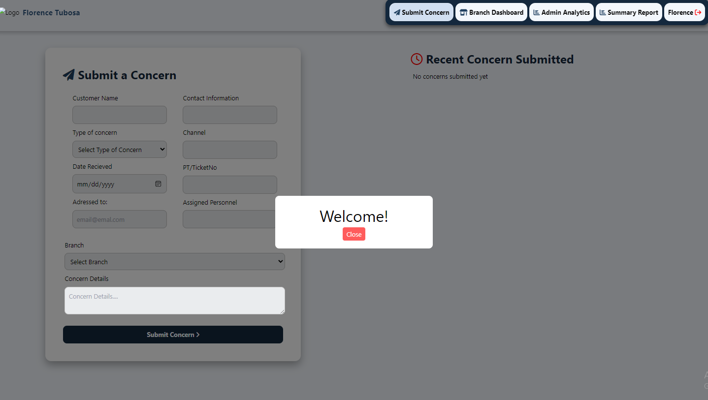
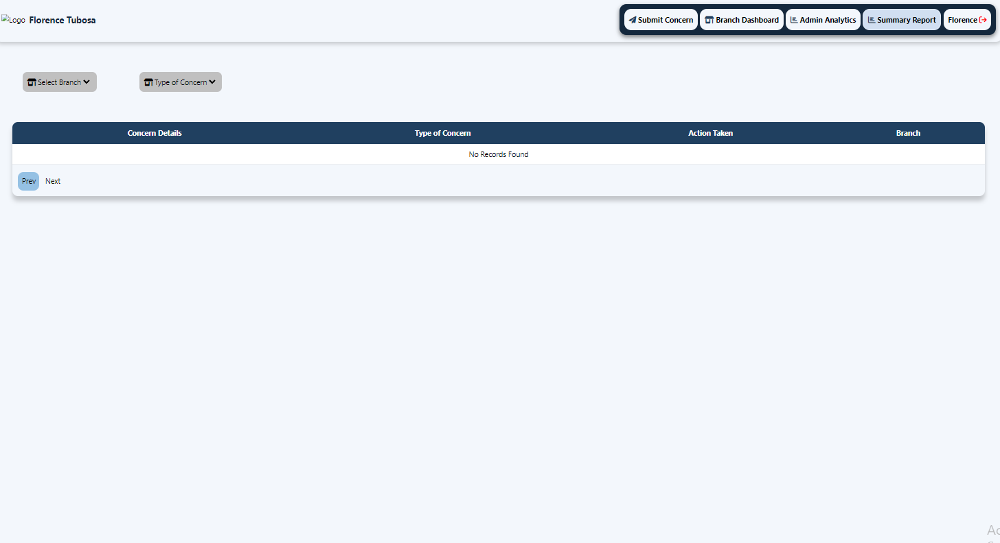
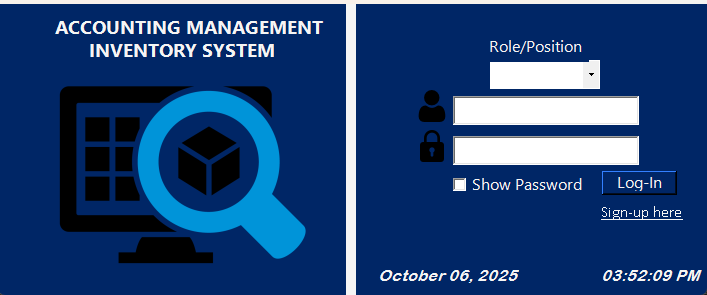
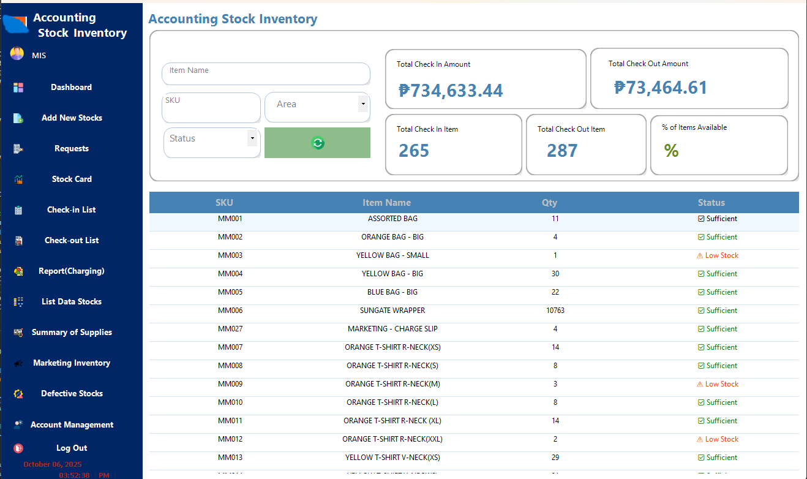
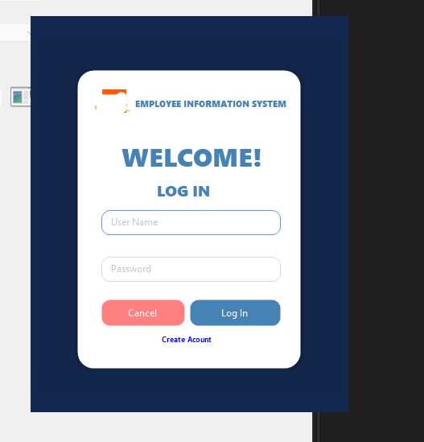
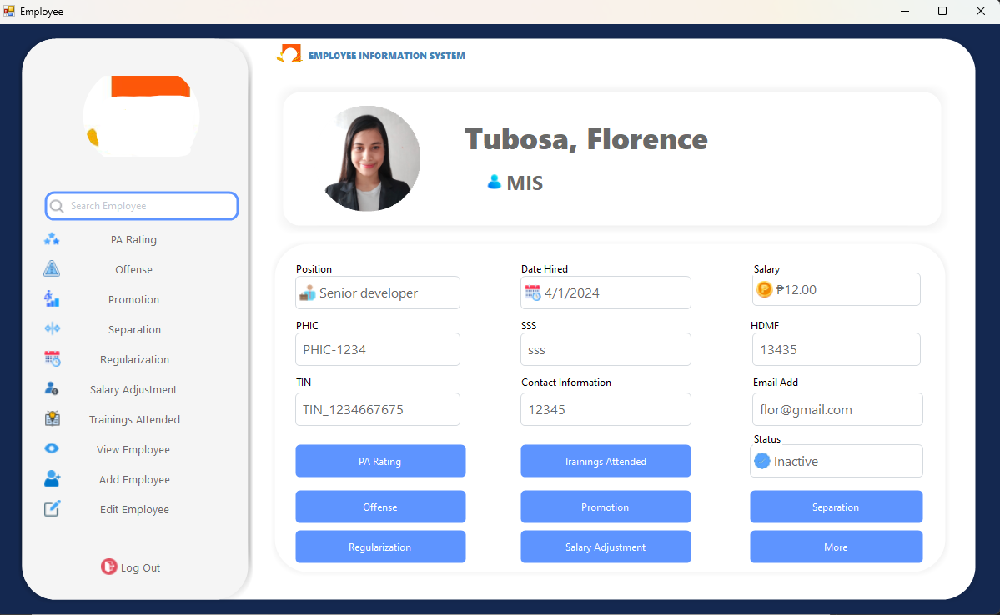

About
I build practical business systems for payroll, HR, inventory, analytics dashboards, and customer management.
My main stack includes Python (Flask), Node.js, VB.NET, JavaScript, and MySQL. I also deploy and maintain apps
on VPS environments (Hostinger) with SSL and domain configuration.
Projects
Customer Concerns System
HTML • CSS/Tailwind • JavaScript • Node.js • MySQL • Hostinger VPS
Internal web system to track customer complaints, follow-ups, resolution status, and admin analytics.
- Complaint submission + branch tracking
- Follow-up & resolution workflow (status updates)
- Admin analytics dashboard + summary reporting
- Deployed on VPS with SSL/domain configuration
Role: Sole developer (UI, backend, database, deployment)




Cost Allocation System
VB.NET • MySQL
Windows-based tool to calculate and report cost allocations across departments.
- Cost allocation entry and tracking
- Monthly reporting and summaries
- Database-driven records and filtering
Role: Sole developer (UI, logic, database design)
Accounting Inventory System
VB.NET • Remote MySQL (Hostinger)
Centralized inventory tracking for accounting items with monitoring of item check-in/check-out.
- Item tracking (in/out) and history logs
- Centralized database (remote MySQL)
- Reporting for accountability
Role: Sole developer (UI, logic, database)


HR Employee System
VB.NET • Remote MySQL (Hostinger)
Employee records: trainings, salary adjustments, offenses/violations, promotions, separations.
- Employee profile management
- Historical tracking (training, adjustments, incidents)
- Centralized remote database
Role: Sole developer (UI, logic, database)


Marketing Analysis System
VB.NET • MySQL
Internal dashboard analyzing leads, age range, demographics, and transaction trends.
- Analytics dashboard and reporting views
- Filtering and summaries for decision support
Role: Sole developer (UI, logic, database)
Marketing Web Portal
Python (Flask) • HTML/CSS • JavaScript • MySQL • Hostinger VPS
Internal web platform for managing marketing campaigns and leads.
- Lead management and campaign records
- Database-backed CRUD workflows
- Deployed and maintained on VPS
Role: Sole developer (UI, backend, database, deployment)


.png)